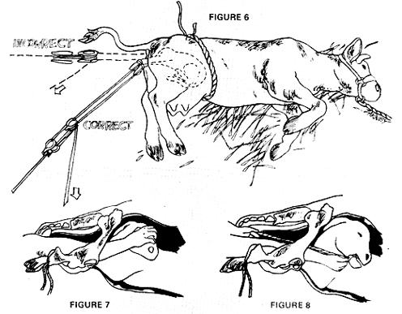
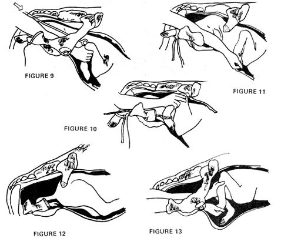

A Herdsman's Handbook For The Modern Homesteader
Here's installment number two of Dr. Holliday's manual precisely designed to explain all the animal facts of life in language that new back-to-the-landers can understand.
By R.J. Holliday
July/August 1972
Beginning farmers usually do pretty well with gardens, chopping wood and building outhouses... but the birth of that first calf or litter of pigs generally sets 'em back a couple of notches, R.J. Holliday DVM, a , veterinarian in Missouri and MOTHER contributor, intends to remedy the situation. His tool? A new handbook precisely designed to explain all the animal facts of life in language that new back-to-the-landers can understand.
MOTHER is serializing the manual as Dr. Holliday cornpletes each chapter and here`s installment No. 2:
Before reading this section, it would be helpful to review Veterinary Obstetrics Part I in MOTHER No. 15.
the actual delivery of a calf (indeed, any young animal) invokes at least two factors of a purely mechanical nature. These factors must be understood before any attempt is made to forcibly extract a fetus. Failure to consider them can cause serious crippling or death to the mother and to the offspring, even though, the delivery may actually be accomplished by the excessive application of force
Except in some uncommon conditions, the soft tissues of the dam's birth canal can be stretched to accommodate almost and size calf. In similar fashion, the soft tissues of the fetus can be compressed to a considerable degree. Any problem that exists then must be thought of not only as a problem of relative size relationships but, also as a problem of aligning the skeleton of the fetus with the greatest diameter of the pelvic bones off the dam.
Figure 1 shows the position of the calf shortly before parturition begins. Figure 2 is a simplified side view of a normal pelvis. Note that the opening through the pelvis is slightly tipped. Thus, improperly applied traction forces the path of the fetus to follow line A while the normal path of the fetus should follow the curved path traced by Line B.
A cutaway view of the pelvis with a calf in the normal position for birth is illustrated in Figure 3. Note here that any traction applied in a direction corresponding to Line A. In figure 2 only serves to force the baby through the narrowest diameter of the pelvis, while a force in the direction of Line B in Figure 2 allows full utilization of tile greatest diameter of the pelvis by allowing the calf to follow the normal curvature of the birth canal.
The other mechanical factor of importance is the proper alignment of the spinal column, head and neck, and legs of the fetus so that their entry into the birth canal occurs in the correct sequence. Every effort should be made to insure that the fetus is in a natural position for birth and that any manipulations by the assistant do not contribute to the complications already present.
Let me repeat that two considerations must be borne in mind before and forced extraction is attempted (1) the direction of the pulling force must be compatible with the curvature of the birth canal and (2) the position and posture of the fetus and its appendages must be in proper alignment for delivery,
It's advisable for the herdsman to have on hand the following supplies and equipment.
(1) A good stout rope or leather halter for restraint purposes.
(2) In lieu of the availability of two or three strongmen to help, some sort of satisfaction apparatus is desirable, This can be in the form of a fence-stretcher tell or a specially designed veterinary "calf-puller".
(3) Two or three obstetrical chains or cords with handles or cords with handles.
(4.) A clean bucket of water and some clean towels ear sponges.
(5) A good, slick lubricant for use on the arms and in the birth canal if necessary.
(6) A mild disinfectant soap to sanitize the arms hands of the operator as well as the vulva of the cow.
If you've decided that you actually do have a calving problem (read Part I ), a preliminary examination of the mother should be made. Restrain the animal so that she can be examined safely and with a minimum of stress. Have someone hold the tail to one side, and wash and sanitize the vulva.
For the preliminary exam, use your "off" hand (the one other than the hand you normally use). This saves your strongest hand and arms for more strenuous use later. Make sure fingernails are short-clipped and clean and wash and lubricate your hands and arms. Cup the hand so that the fingers, thumb come together and gently insert the hand and arm into the vagina. This examination may disclose any one of a number of situations (discussed later in this section) which may or may not require further treatment.
If, at this time, you decide the the mother needs more help... stop for a moment and recheck your restraint. Tie the halter rope low so that the cow's head can touch the ground when she lies down and allow her ample space to do so. Before proceeding, assemble any other equipment you might need and call any helpers that might be desirable.
The rest of this section will deal with the various problems that might be encountered. Each will be discussed separately along wilh recommended remedial action.
Bear in mind that this blook is not intended to be a complete course in Veterinary Obstetrics, but rather a simple guide to help you overcome the most common problems that you're likely to find. If you encounter a situation that's not covered or one that you're in doubt about, do not hesitate to consult with your veterinarian or another knowledgeable person.
Most of the time, your initial examination will reveal the presence of two feet and a nose in the vaginal canal.. This is normal position for birth and is graphically illustrated in Figures 1 and 3. Attach a loop in the O.B. chain or rope firmly around each foot well above the "dewclaws" (see figure 3) Attaching the ropes in a lower position can result in severe damage to the feet of the newborn if heavy traction becomes necessary.
When the ropes or chains are properly attached, affix the handles and apply moderate pressure to the fetus. Make sure the calf's head is still in the proper position, and observer the precautions outlined above with regard to the direction fo force applied. fry to three your pulling efforts with the cow's straining.
As you exert force, keep one of the feet well in advance of the other to avoid having both shoulders enter the pelvic inlet at the same time. Figure 4 shows a cutaway top view proper way to advance the shoulders into the birth canal. Note that (Figure 5) when the force applied to the feet is equal, the shoulders are brought into the pelvis simultaneously, resulting in an increase in the diameter of the fetus and a more difficult birth.
The greatest force will be required as the head and shoulders are brought through the pelvis. As these parts are presented, continue to use moderate pressure until the delivery is complete.
It may be necessary to rotate the calf slightly on its longitudinal axis to avoid a condition called "hip-lock". As the name implies, this situation is caused by the fetal pelvis engaging the maternal pelvis is such a fashion that they do indeed seem to be locked together. If this occurs, release all pressure and rotate the calf about 45° in either direction and then resume the application of pressure.
This is a rather simplified description of the uncomplicated delivery of a normal calf. It also applies to the delivery of the too-large calf, differing only in the amount of force necessary to complete the extraction. Obviously, the larger the calf the greater the amount of force that will be required.
If the above principles are adhered to, the force supplied by two or three men will usually be sufficient to effect most deliveries. More pressure than this may result in permanent injury to the dam and in the death of the fetus. If you have no help, it will be necessary to resort to the use of a mechanical device to increase the traction.
The "calf-pullers" commonly in use by veterinarians are designed to exert force in the proper direction. On the other hand, a fence-stretcher or a block and tackle is not capable of applying the proper directional force unless an auxiliary belly-band or rope is used to help correctly align the force exerted by the stretcher.
F igure 6 shows a cow lying down with the block and tackle attached in both the proper and improper positions. If the cow remains standing, the same angle should be used. This can be accomplished by attaching the end of the stretcher to a low point behind the cow.
If the attempts at forced extraction are not successful, you'll ultimately have to decide when further traction will result in permanent injury to the cove and calf. Experience and common sense will usually dictate when this point is reached, and then you really have only two alternatives, Either (1) a veterinarian must be summoned to perform an embryotomy (dismemberment of the calf and piece-by-piece removal) or a Caesarean section or (2) you must accept the possibility of the ultimate death of the cow and calf.
In the following discussion of improper positions and postures and their correction, the above considerations will again apply as soon as the position is corrected and forced delivery is possible.
During the preliminary examination; if only feet are found it will be necessary to determine if they're front feet or hind feet. Obviously, the presence of a head or a tail will provide the proper orientation, but it's sometimes impossible to teach these identifying features, When this is the case, advance your hand along the foot and leg up to the first joint above the dewclaws. On hind legs you'll be able to feel the Achilles tendon (a long, round cord running from the point of the hock to the large muscles on the hind leg). A tendon of this sort is not present on the front legs. You can verify this difference rather easily by comparing these joints on any calf.
If you encounter two hind feet in the pelvic inlet, attach the chains or ropes and proceed with the delivery as described above. Remember to keep the legs slightly offset. In this presentation the delivery must be accomplished quickly or the calf will suffocate in the uterine fluids.
Two front feet and no head in the birth canal presents a grave problem since it's impossible to effect a delivery until the head can be brought into a normal position. When you locate the head, gently push back on the feet to provide more room in the pelvis, and gradually bring the head around into a normal position (Figure 7). A person with strong hands can usually do this by grasping the head with the thumb and index finger inserted into the eye sockets (this is safe and causes no damage to the calf). It`s also possible to pass a noose or snare around the calf's head and through its mouth to provide the necessary fixation (see Figure 3). A loop of rope around the lower jaw is generally unsatisfactory (Figure 8). After the head is brought into the proper position, delivery can proceed normally.
An even more difficult problem, is a "head-alone" presentation, especially if the head has passed all the way through the vagina. It is very difficult, in such a case, to return the head back through the pelvis so that space is available for you to reach the baby's feet. Both feet must be carefully advanced along the neck and extended into the normal position before the birth can. continue. If this cannot be done and if the calf is dead (no eye reflexes) then the head cart be removed surgically to provide room in the pelvis to advance the feet into the proper position. Here, as in all repositioning, the liberal use of a lubricant will make the job much easier.
A "head-and-one-foot" or "only-one-foot" will require somewhat the same manipulations as the above presentations to put the appendages of the fetus into the proper position for delivery (Figures 9, 10 and 11).
Clue of the most difficult presentations to work with is the "breech" (Figure 12). In this case, only the rump or the tail can be found. If the labor has not progressed too far, the situation can be remedied by gently pushing in on the rump and at the same tune carefully extending the hind legs, one at a time, into the birth canal (Figure 13). This may require tire use of both arms in the vagina and one hand should be cupped over each hoof to safeguard against the possibility of puncturing the uterus as the foot is extended. When both feet are in the proper position, delivery can proceed.
Twins are sometimes the cause of dystocias (difficult births). The main problem isn't usually size or malposition, but rather in trying to sort out which two legs belong to which calf. Take time for a thorough examination, and before exerting any force on a fetus, make sure that you have matching legs from the same calf.
The conditions described above are by no means all that might be encountered. If you happen to encounter other troublesome situations, try to visualize the closest normal position and align the calf accordingly. Experience will be your best instructor in these techniques.
Assuming that you have delivered a live calf by any of the above methods, here are a few hints to insure that the calf will have the best chance to survive:
(1) After a prolonged birth, it is sometimes helpful to hang a calf up by the hind legs for several minutes to allow most of the placental fluid to drain from its mouth and lungs. If the calf is slow to breathe, it's sometimes possible to stimulate the respiratory reflex by tickling the nostrils with a piece of hay or straw or by forcibly inserting one or two fingers into the calf's rectum.
(2) The navel cord of the newborn baby should be thoroughly saturated with Tincture of Iodine.
(3) As soon as possible after the delivery is completed, leave the premise so the cow can "own" her calf without interference. (Smearing some placental fluids on the dam's nostrils seems to enhance the instinctive desire of the cow to care for her calf.)
Most other domestic animals deliver their offspring with a minimum of trouble. Horses and ponies foal so easily that it's rare, even for a veterinarian, to witness a birth. Any dystocias in sheep and goats can be handled by the same principles as those applied to cattle (multiple births in these two species are common). Well-managed swine only rarely have problems . . . pig fetuses are relatively small and can usually deliver in any position, except sideways.
The next installment in this series will deal with postpartum complications and care of the new mother and baby.
 |
 |
 |